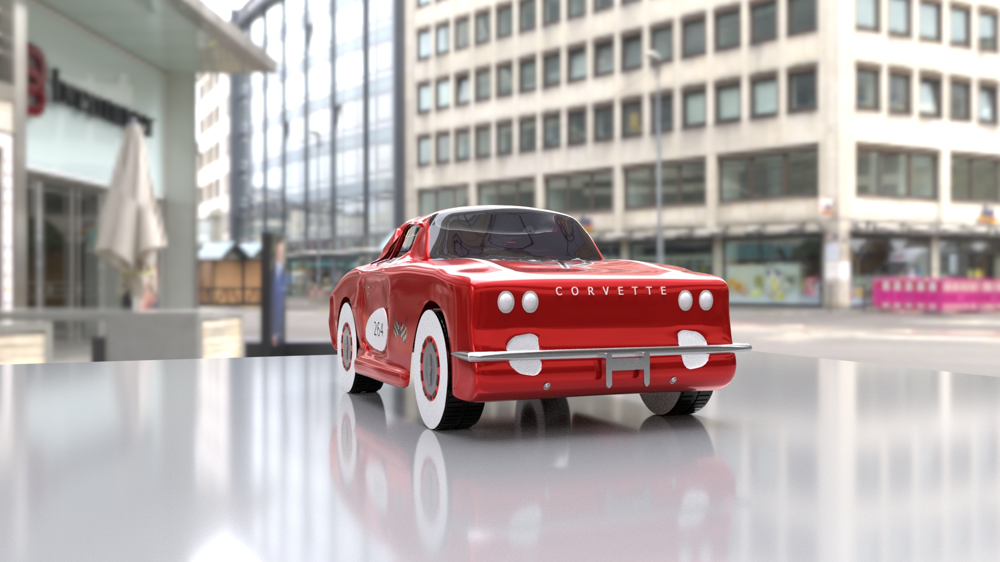
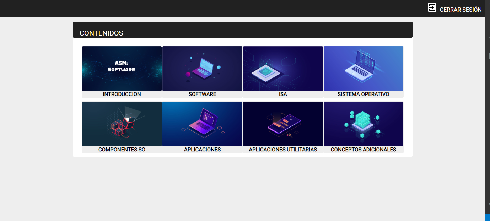

Jhosua
Pachón Bueno
jhosua.pachon@uao.edu.co
Soy ingeniero multimedia que le gusta los retos y no se rinde fácilmente. Autodidacta cada día, nunca dejo de aprender
Últimos proyectos
Find a way Videojuego

Find a way narra la historia de Orson, quien se encuentra recorriendo una compañía a través de diferentes dimensiones, buscando fragmentos de una materia llamada Partículas cuánticas para evitar que la tragedia que lo tiene viajando a través del tiempo y espacio se produzca en primer lugar.
Corvette micromachine
Modelo hecho en Maya de un corvette estilo micromachine
Videos interactivos
Desarrollo de una plataforma interactiva para la asignatura de Arquitectura de sistemas multimedia donde los estudiantes pueden estudiar sobre la temática de software en una serie de videos los cuales cuentan con 3 juegos (Ahorcado,cuestionario,arrastrar y soltar)